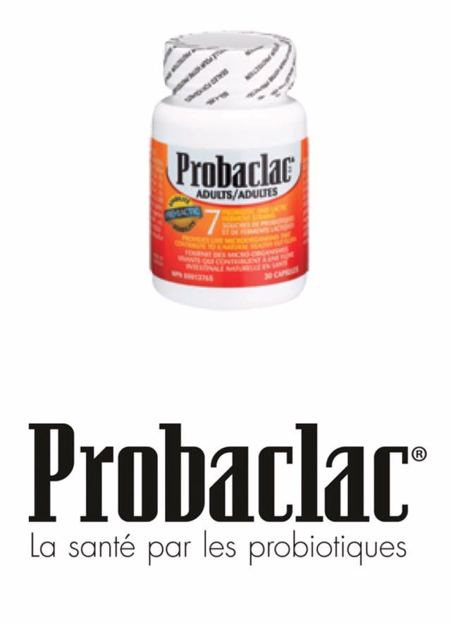
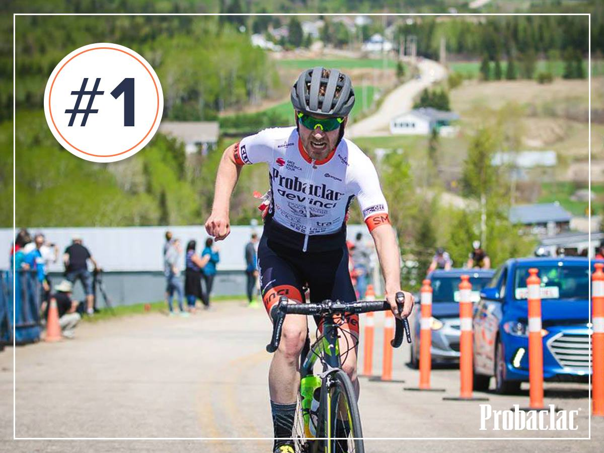
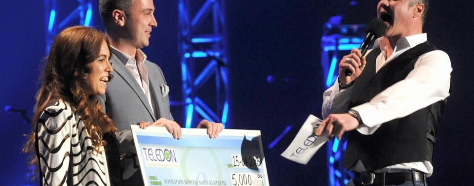
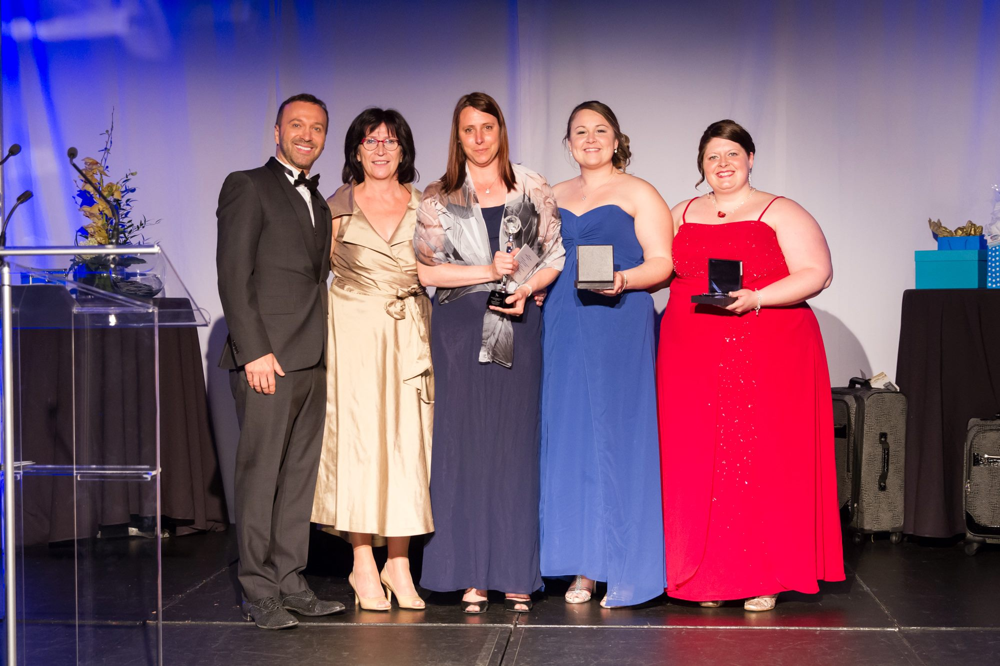

🌟
Breakfast Club of Canada
Because learning on an empty stomach is hard. We support this cause that ensures every child has access to a nutritious meal to start the day right.
Nutrition · Youth
An interactive guide helps you choose by age, profile or need.
Choosing the right probioticreduction in antibiotic-associated diarrhea with Probaclac Medic. See the study →
Guides and references to demystify the microbiota and find the formula that fits your need.
Probaclac is much more than a range of probiotics. It's a story of passion, family and innovation — born right here in Québec, in the early 2000s.

A shared vision, a team already present in Québec pharmacies, and the drive to go further.
It all began in the early 2000s, in the northern suburbs of Montréal. At the time, Régent Racine and Andrée Allard — both brokers in the natural health products field — already had solid market experience and a team of representatives visiting pharmacies across Québec.
Driven by a shared vision and the desire to go further, in March 2005 they took a new step: founding their own company to develop a probiotic line that lived up to their standards. Their goal: to offer genuinely effective products, grounded in science and built around people's real needs.
That's how the company Nicar was born — a nod to their family name, Racine spelled backwards. From it came the brand we know today: Probaclac.
From the start, they surrounded themselves with trusted professionals — including a microbiologist and a pharmacist — to design high-quality formulas. Beyond the formulas, their mission was clear: to educate health professionals and the public about the real benefits of probiotics, and never compromise on quality.
From the meeting of two brokers to a Québec reference in digestive health.
On Montréal's North Shore, Régent Racine and Andrée Allard are natural-product brokers. Their team of reps already criss-crosses Québec's pharmacies.
They create their own company to develop a probiotic line worthy of their standards. The name, Nicar, is a nod to Racine spelled backwards. From it, the Probaclac brand is born.
A microbiologist and a pharmacist join the adventure to design high-quality formulas — grounded in science, built for real needs.
Inform health professionals and the public about the real benefits of probiotics. And never compromise on quality, at any step.
Probaclac has become a recognized name in the probiotics field in Québec — while staying true to its family roots and its original mission.
As a Québec family business, we believe in supporting the causes close to our hearts — for a healthier, more human and more caring world.
Because learning on an empty stomach is hard. We support this cause that ensures every child has access to a nutritious meal to start the day right.
Support for research, awareness and the families affected by this disease. A small gesture to help make a big difference in many lives.
We believe in the importance of mental health. Supporting this organization means helping to save lives and offer essential resources to those who need them.

Proud to support local sport and the athletes who carry our colours on Québec's roads.

In support of the Fondation Hôpital Saint-Eustache — because every gift is a concrete way to contribute.
Every year, the Probaclac team takes an active part in various conferences and seminars across Québec. A presence that lets us share our expertise, inform health professionals about our formulas and their clinically proven benefits, and strengthen our ties with pharmacists, nurses and dietitians.

Discover the Probaclac formula that fits your age, profile or condition.
Choose my probiotic →